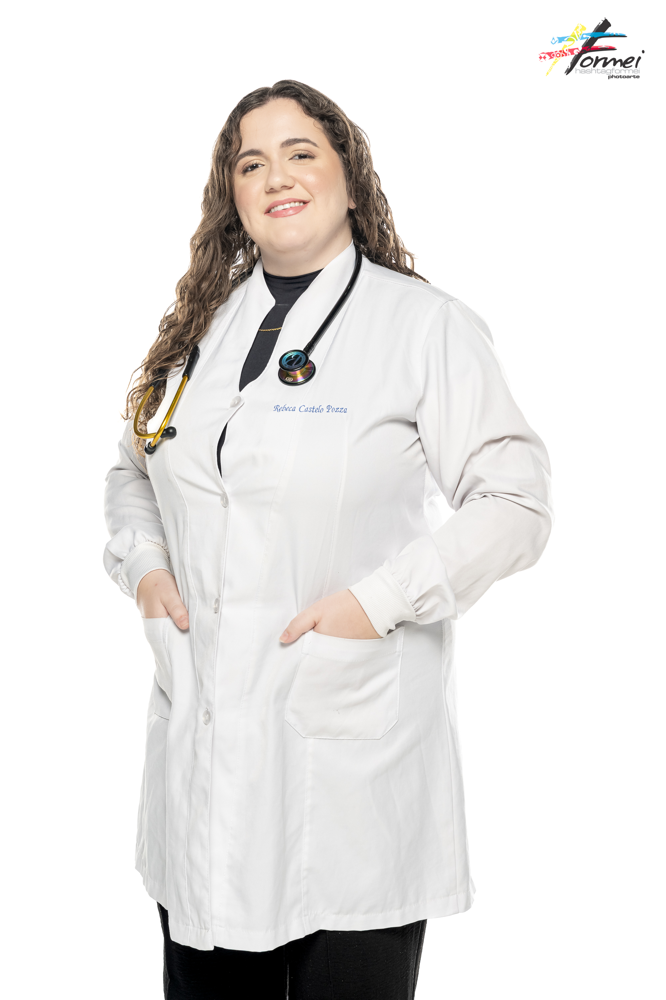

Enfermeira generalista recém-graduada. Reúno sólidos conhecimentos técnicos e inteligência emocional. Pronta para atuar em UTIs, Pronto-Socorros ou Unidades de Internação com disponibilidade total.

Competências técnicas, de gestão e interpessoais desenvolvidas para uma prática de excelência
Protocolos assistenciais com foco em segurança do paciente, Suporte Básico de Vida (SBV) e Suporte Avançado de Vida (SAV), e elaboração de planos terapêuticos individualizados.
Coordenação de equipes multiprofissionais, organização de escalas, agendas e recursos, e tomada de decisão baseada em evidências científicas.
Comunicação efetiva com pacientes e equipes, escuta terapêutica e empatia no atendimento, e atendimento humanizado com foco no bem-estar do paciente.
Atuação clínica e assistência integral
Vivência prática supervisionada
Total disponibilidade para escalas 12x36 (diurno/noturno), 6x1 ou comercial. Início imediato.
Ativo, definitivo e com anuidade em dia.
Disponível para entrevistas e testes.